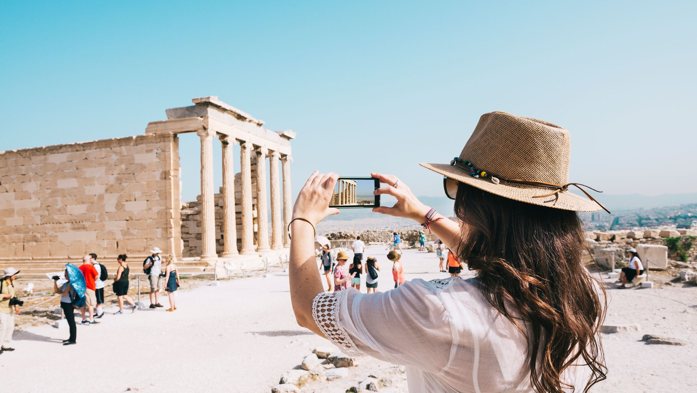

Florence
Florence of Firenze is een stad in Italië. Het is de hoofdstad van de regio Toscane en de metropolitane stad Florence. De stad telt circa 382.000 (2017) inwoners en ligt aan de rivier de Arno. Het is de bakermat van de renaissance en daarmee een van de bekendste cultuursteden van Europa. Florence is een groot openluchtmuseum voor iedereen, die van geschiedenis en cultuur houdt. Het is een stad vol interessante musea, pleinen, kerken, beelden en kunst. Firenze heeft meer te bieden dan alleen de bekende highlights zoals de Ponte Vecchio brug, het Palazzo Vecchio en de Dom in Florence.
Boek een vakantie naar Florence.© florencetips.nl

Tokyo
Een vakantie naar Japan gaat een geweldig avontuur worden. Je reist af naar een uniek land ver weg van Nederland dat een prachtige cultuur, natuur en lange historie heeft. Het land is geliefd onder reizigers uit heel de wereld als vakantieland dankzij de diversiteit aan bezienswaardigheden en activiteiten. Vakanties naar Japan worden het gehele jaar door geboekt. Dit komt omdat elk jaargetij wel een unieke dimensie geeft aan de reis. Zo tekent de kersenbloesem de lente, de zonnige en warme dagen de zomer, kleurendekens in de bossen de herfst en de perfect witte skipistes de winter.
Boek een vakantie naar Tokyo.© tokyo.nl
Athene
De Griekse hoofdstad Athene is de bakermat van de Westerse beschaving en vandaag de dag is dat nog in de hele stad zichtbaar. Athene is een moderne stad, vol met gezellige restaurants, barretjes en boetieks,. Athene heeft op elke hoek van de straat schatten uit de Griekse Oudheid, het Romeinse Rijk en Ottomaanse Rijk. Trek een sprintje in het Oud Olympisch Stadion, voel de Oosterse invloeden in de wijk Monastiráki of bewonder toneel in Het Theater van de Romein Herodes Atticus.
Boek een vakantie naar Athene.© anwb.nl